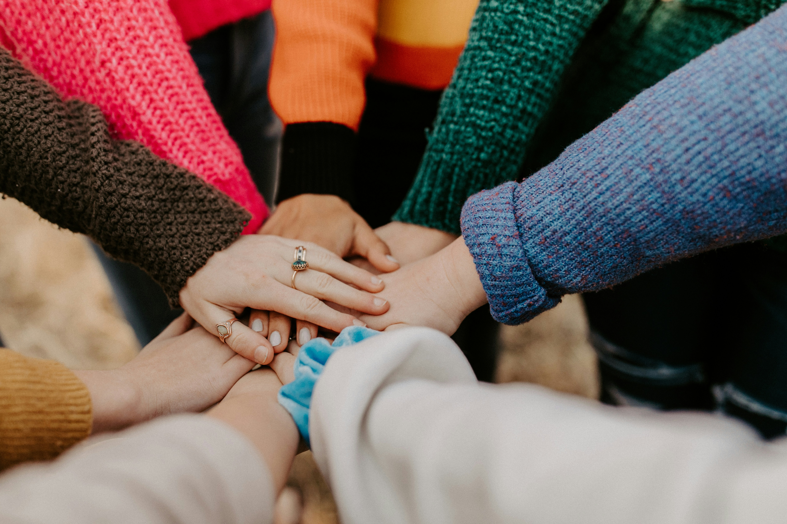

Missão
Facilitar o encontro entre pessoas dispostas a ajudar e projetos sociais da Grande João Pessoa, tornando a solidariedade simples e acessível.
Uma ponte entre quem quer ajudar e os projetos sociais que transformam a Grande João Pessoa.
Muita gente quer ajudar, mas não sabe por onde começar. As informações sobre projetos sociais, campanhas e vagas de voluntariado ficam espalhadas em perfis de redes sociais, grupos de mensagens e cartazes, e muitas organizações pequenas não têm como divulgar o que fazem.
O Conecta Solidário nasceu para reunir tudo isso em um só lugar. Aqui, qualquer pessoa pode conhecer as causas da sua cidade, entender do que cada projeto precisa e escolher como participar: doando, se voluntariando ou simplesmente compartilhando.
Começamos por João Pessoa, a cidade onde o sol nasce primeiro nas Américas. E assim como a estrela, a solidariedade também pode nascer primeiro aqui.

Facilitar o encontro entre pessoas dispostas a ajudar e projetos sociais da Grande João Pessoa, tornando a solidariedade simples e acessível.
Ser a principal referência local para quem procura onde e como ajudar, fortalecendo as organizações da cidade.